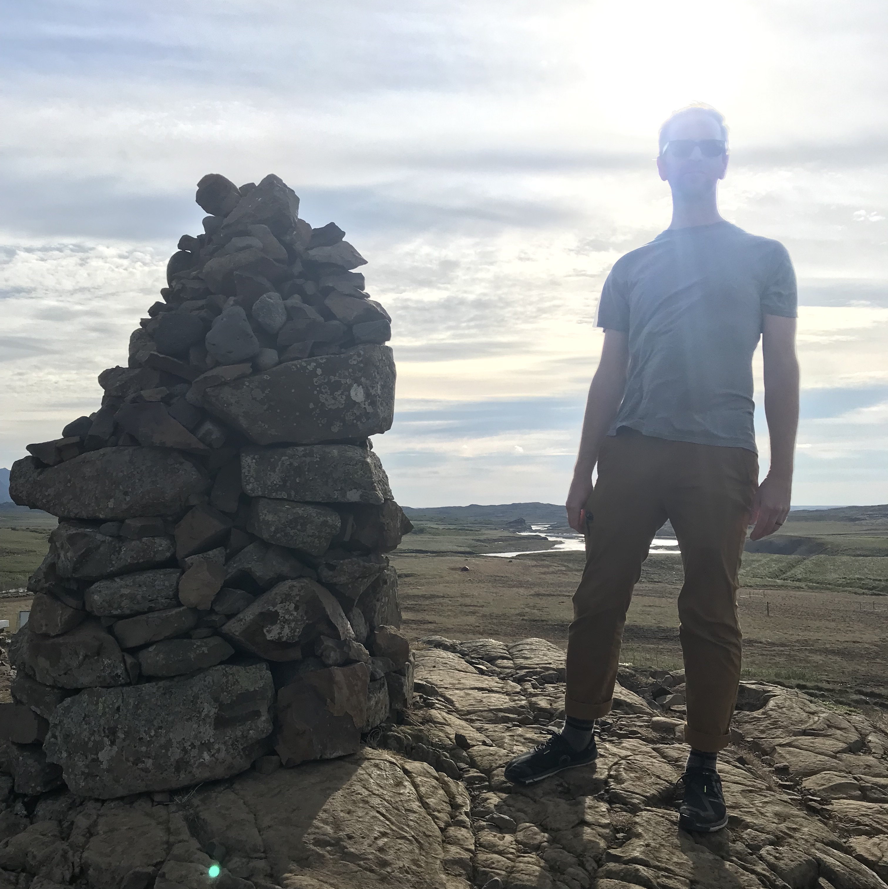

who i am
My name is Connor Joseph Bell (b. 1979 in Oshkosh, WI USA). I currently live in the beautiful neighborhood of Beechmont in Louisville, KY USA with my wife, Deidre, and three little weens. I have publicly pursued sound for over 20 years as Shedding as well as playing in a handful of bands over those years. Otherwise, I do a fair amount of reading, baseball and hockey watching, gardening, and I’m always trying to learn new things and keep up with current events. I have a Master’s degree in history and taught for over 12 years before resigning in 2020. I hope to find a healthy atmosphere to return to education, as I really miss cultivating and engaging in meaningful, respectful, and thoughtful discussion. Until then, I’m exploring other directions in life.
This website will gradually expand, but currently is the first little flower from a seed of me dipping my toes into coding. This process began with some Udemy courses on Python and Git and now I’m in the Code Louisville program. I’m hoping to continue to dabble. If nothing else, it will help me think in different ways and I’m already making connections between this pursuit and computer music in MAX, TidalCycles, and SuperCollider and other electronic music pursuits.